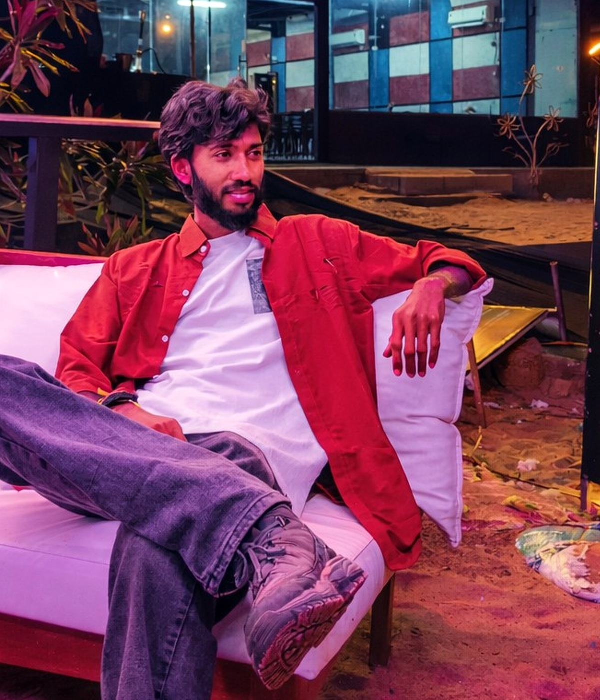

CASE 001
87ATS
CAREER
INTELLIGENCE
INTELLIGENCE
01 / AI · FULL STACK · LIVE
CAREERPILOT AI
AI-powered career intelligence platform for resume analysis, ATS optimization, job matching, career coaching and interview preparation.
OPEN LIVE PRODUCT ↗I design and build software systems, analytical products and full-stack experiences that move from idea → interface → impact.

PORTRAIT / 2026Final-year Computer Science & Engineering graduate building across software engineering, data analytics and full-stack development.
Products, models, dashboards and connected systems — presented as visual case files.
AI-powered career intelligence platform for resume analysis, ATS optimization, job matching, career coaching and interview preparation.
OPEN LIVE PRODUCT ↗IoT wildlife conservation concept with simulator, REST APIs, Socket.io and alert-trigger logic.
Star-schema analytics engine using SQL, Python, Power BI and DAX for sales intelligence.
MRI image classification with CNN, TensorFlow and OpenCV. Weighted F1: 0.75.
XGBoost + Scikit-learn model with MAE 8.49.
Text classification pipeline using TF-IDF features and Logistic Regression.
Career information is fragmented. The product direction: combine resume signals, ATS feedback, matching and coaching into one continuous experience.
Not every build belongs in the archive. The lab is where tools, experiments and engineering habits meet.
Build systems that are readable before they are clever.
Validate data, APIs and model outputs before shipping.
Turn prototypes into deployable, explainable products.
Keep learning by building things that stretch the stack.
Computer Science & Engineering journey at Shershah Engineering College, Sasaram.
InfinityCore Technologies / BlinkSkills — remote robotics internship.
East Central Railway S&T internship, followed by cloud computing training.
Building AI, analytics and full-stack systems while moving into software engineering.
Three environments. Different constraints. A growing engineering vocabulary.
Four-week remote program · 88% completion.
Telephone exchange, optical fibre, quad cable, PA, PRS/UTS and mobile train radio systems.
Remote robotics internship · 92% completion.
Have a problem worth solving? Let's turn it into a system worth using.